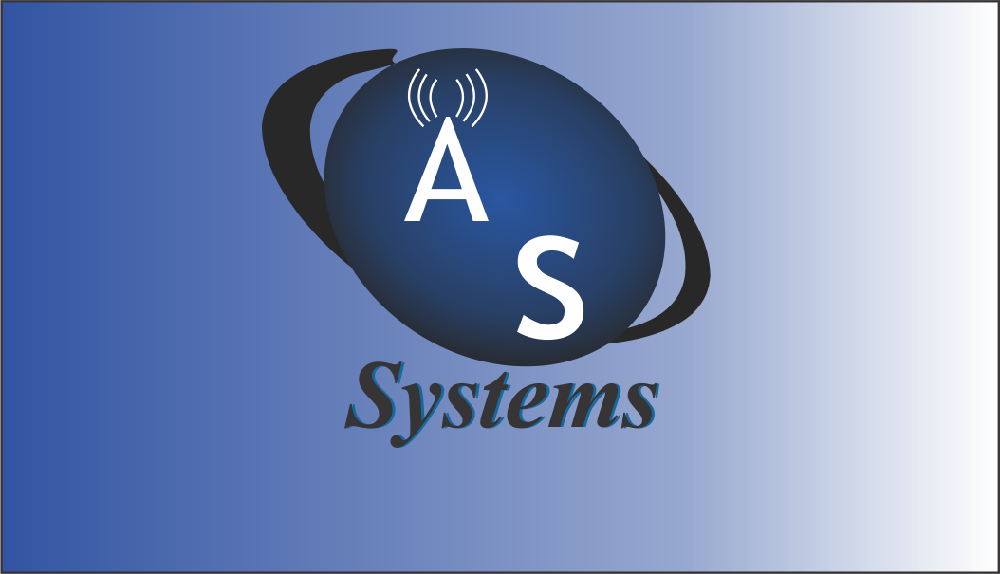
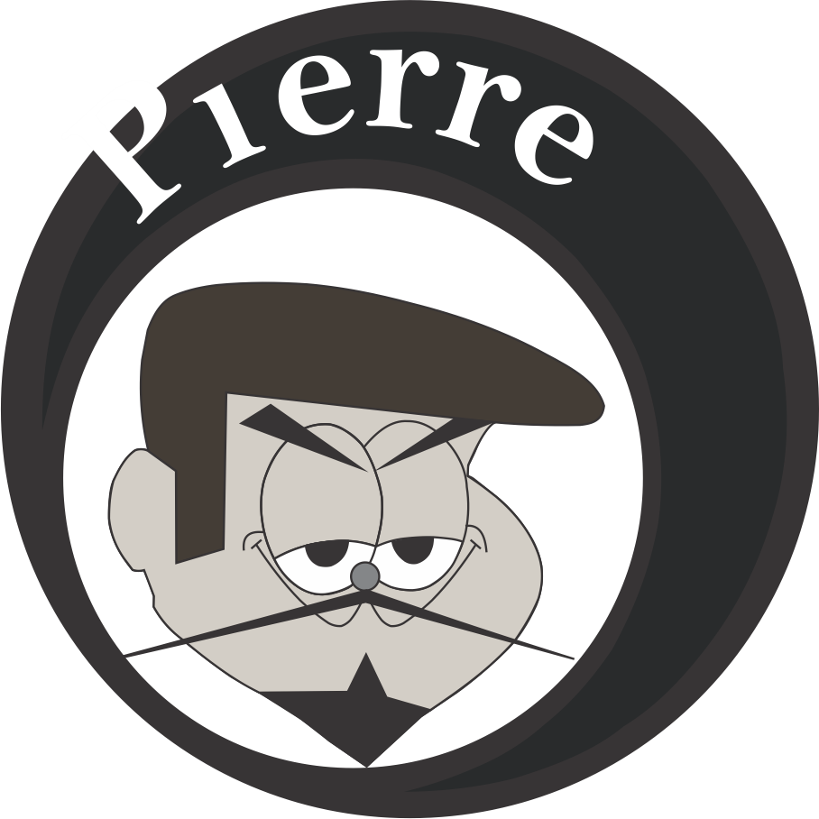
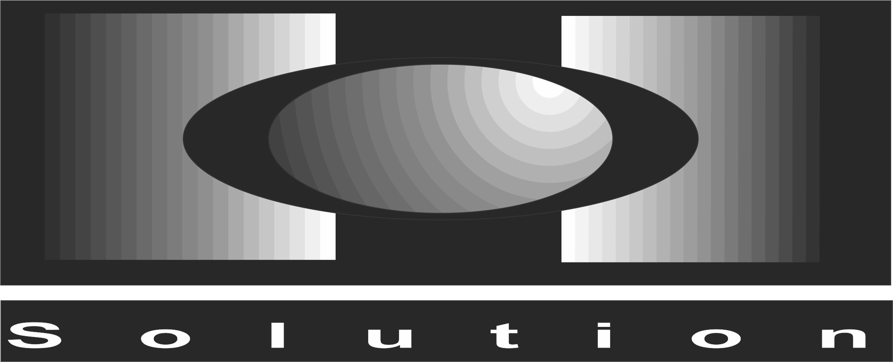

Profª Fabiana Pupim
Mestranda em Ciência da Computação - Área de Concentração: Sistemas de Informação - Universidade Estadual Paulista "Júlio de Mesquita Filho" - UNESP - São José do Rio Preto/SP. Graduação em Tecnologia em Processamento de Dados pela Faculdade de Tecnologia da Alta Noroeste (Salesiano) - Araçatuba/SP. Especialização "Lato Sensu" em Computação - UfsCar e Fundação Educacional de Fernandópolis. Licenciatura Plena em Informática -Fatec Sorocaba. Professora dos Cursos Superiores em: Análise e Desenvolvimento de Sistemas, Gestão Empresarial e Sistemas para Internet da Fatec Prof. José Camargo de Jales. Responsável pelos projetos "Click Melhor Idade" e "Artes Gráficas" (Fatec Jales). Professora do Curso Técnico em Informática Integrado ao Ensino Médio da Etec "Dr. José Luiz Viana Coutinho" - Jales (Centro Estadual de Educação Tecnológica Paula Souza) Experiência na área de Ciência da Computação, atuando nos seguimentos: Design Digital, Engenharia de Software, Ensino Técnico, Superior e EaD. (Texto informado pelo autor)
Conceito
Introdução ao Design digital. Otimização de imagens para padrões Web de composição. Criação de marcas e logos para sítios Internet. Transferência do design para o sítio Internet.
Objetivo
Apresentar as bases do design gráfico de produção de sítios Internet com emprego de softwares. Projetar mock-ups (cenas) usando o software de design digital, em seguida implementar o projeto como um sítio Internet. Identificar os principais componentes dos softwares para design gráfico: espaço de trabalho, canvas, painéis, ferramentas e menus. Definir padrões de cores e empregá-los em esquemas de cores. Definir, descrever e empregar os elementos de artes gráficas: o ponto, a linha, a forma, a direção, o tom, a cor, a textura, a dimensão, a escala e o movimento. Projetar logos e marcas. Desenvolver um logo para própria página. Descrever e utilizar camadas. Otimizar organização de arquivos para trabalho em equipe. Conhecer e empregar os padrões de gravação de arquivos de imagem. Escolher o programa mais adequado para tratamento de imagens. Definir e criar um guia com os quatro elementos básicos de qualquer sítio (cabeçalhos, navegação, conteúdo e rodapé) com aplicação de padrões de design, esquemas de cores e fontes tipográficas. Projetar vários estados de interação e comportamento. Criar um sítio completo com várias páginas com todos os elementos de design, HTML e CSS estudados no curso. Empregar os padrões de resolução de tela e impressão e saber converter medidas aplicadas ao desenvolvimento de sítios para Internet. Calcular tamanhos seguros dos layouts dos sítios Internet.
Portifólio
Esses são alguns exemplos do que foi praticado nas aulas de design desse primeiro semestre.
- 
- 
- 